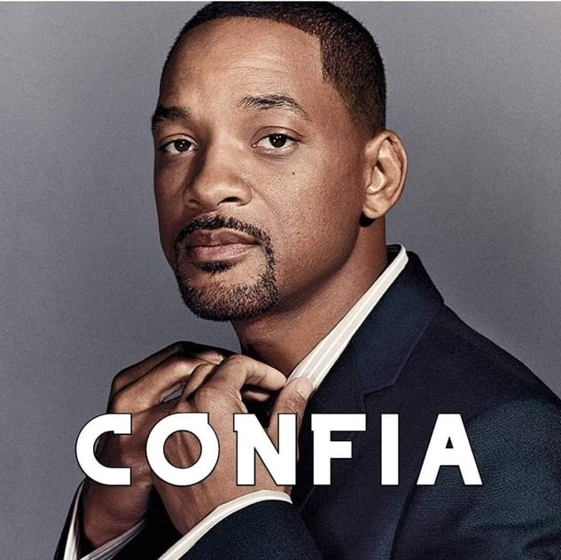

OsCabeçaOca
OsCabeçaOcaCriação
O Jornal dos Cabeça Oca, foi criado em 15/04/2021 com objetivo de não traumatizar o leitor, para isso, o "Jornal" hospeda notícias das mais diversas bolhas sociais, provendo vídeos, artigos e notícias dos temas mais aleatórios possíveis.
Logo
A imagem que faria parte da Logo do Jornal dos Cabeça Oca deixou o criador em um dilema entre a imagem atual e a imagem abaixo. Qual delas você escolheria?
The Unforgiven Metallica New blood joins this Earth And quickly he's subdued Through constant pained disgrace The young boy learns their rules With time the child draws in This whipping boy done wrong Deprived of all his thoughts The young man struggles on and on, he's known Ooh, a vow unto his own That never from this day His will they'll take away What I've felt What I've known Never shined through in what I've shown Never be Never see Won't see what might have been What I've felt What I've known Never shined through in what I've shown Never free Never me So I dub thee unforgiven They dedicate their lives To running all of his He tries to please them all This bitter man he is Throughout his life the same He's battled constantly This fight he cannot win A tired man they see no longer cares The old man then prepares To die regretfully That old man here is me What I've felt What I've known Never shined through in what I've shown Never be Never see Won't see what might have been What I've felt What I've known Never shined through in what I've shown Never free Never me So I dub thee unforgiven What I've felt What I've known Never shined through in what I've shown Never be Never see Won't see what might have been What I've felt What I've known Never shined through in what I've shown Never free Never me So I dub thee unforgiven Oh, oh, oh Never free Never me So I dub thee unforgiven You labeled me I'll label you So I dub thee unforgiven Never free Never me So I dub thee unforgiven You labeled me I'll label you So I dub thee unforgiven Never free Never me So I dub thee unforgiven